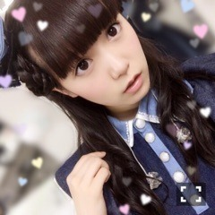
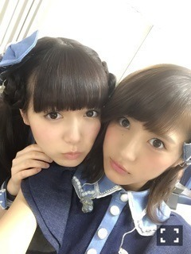
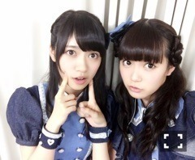
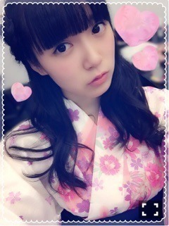

| 2015/08 27 Thu | ひめたん-0o0-その569 |

大阪終わりました～＊
来てくださった皆さん
本当ありがとうございました＼(^o^)／
夢の城ホール。熱かった！
夜公演は一番上までびっしり
ファンのみなさんの顔が見えて
サイリウムすごくきれいだったなあ。
大阪はzepp→中央体育館→城ホールと
段々ステップアップしてきてて
ありがたいなあ( ´•̥ω•̥` )
来年も城ホールでできるかな......
もっとビッグなアイドルになって
また遊びに行きたいと思います！
大阪会場限定Tシャツは
優しい素材。着心地が良いのです。
ということでここまで
地方14公演終わりました。
今回の全国ツアーは今までで一番
公演数が多くて、
もはやアンダーライブと変わらないくらい。
でもアンダーライブとは
環境が全然違うので
学ぶことがたくさんありました。
私が一番気をつけるようになったのは表情。
神宮では、少しでも
去年より成長した姿を見せられるよう
がんばります！
それから、ひめのことを
見に来てくてる人が
去年よりずっと多いなあと( ´•̥ω•̥` )
うちわとかタオルとか
ちゃんと見えましたよ～～
乃木坂は東京がメインなので
みなさんの近くに遊びにいくことが
少ないのでいつもツアー楽しみなんです
今年は広島公演も出来て
地元だったってのも嬉しかったし
新しい地でライブが出来るのはやっぱり
それだけ乃木坂のことを知ってくれてる人が
増えてきたことなのかな( ˇωˇ )
来年もしツアーが出来るなら
まだ行ったことのない都市に行きたいし
宮城、愛知、広島、福岡、大阪にも
帰ってこれるようにならなきゃ！
残すは東京、神宮球場！
来てくれるみなさん
夏休みの最後の思い出
一緒に作りましょーう＼(^o^)／
最近メンバーが大好きすぎる問題。
いろんなメンバーが気になる。
みんなに絡みにいってる(・∀・)へへ
みなみちゃーん♡
ずーっと2人で
みなみちゃーん( ´ ･ω･ ` )
ひめたーん( ´ ･ω･ ` )ってやってる。
ふたりで何か楽しいことしたい～～

若様♡
若様はひめのこと褒めてくれて
甘えさせてくれる(´,,•ω•,,｀)
荒ぶるひめが好きだと言ってくれる(笑)
ああ、こんなおねーちゃんいたらなあ
若様～らぶだよ～♡

蘭世♡
今私の中で蘭世が
かわいくてかわいくて仕方がありません
なんだか気が合うらしい。
ツアー終わったら
ごはん行くんだ(＊´ω`＊)
NOGIBINGO!5は浴衣回でした～
いくちゃんのとばっちり～
でもそうやって振り回されるの
実はまんざらでもなかったり。笑
そうそう、今回のツアー中
ずーっとホテルはいくちゃんとペアでした
お世話になりました( ˇωˇ )
リボンの騎士を真剣に読んでいたり
一緒に筋トレしたり
広島では私が謎の深夜テンション発動したり
昨日は夜遅くまで話聞いてもらったり。
私にとって今年の夏の思い出は
全国ツアーと
いくちゃんとのホテルだよ～＊
あ、
いくちゃんといえば、
次回のらじらーのゲスト
いくちゃんに決定しました＼(^o^)／
いくちゃんへのメッセージや
ツアーの感想などなど
おたよりお待ちしております！
他にも誰か来るかも......？？と
らじらーのツイッターが
言っておりましたよ( °ω° )

 ひめたんは食戟のソーマの中で
ひめたんは食戟のソーマの中で
これは食べてみたい！って料理ある？
もず屋のからあげ！
ひめたんはお祭りに行ったときに
必ず行く屋台はあるの？
さつまスティックとか好きだよ
あれ、なんか食べ物のお話ばっかしてるね
ううう(´；ω；｀)
ねぇねぇ、ひめたんって
乃木坂の全楽曲の中で
どのくらいの数の曲のダンスを踊れるの？？
数えたら47曲だった＼(^o^)／

浴衣！
今回のツアーで販売中の生写真なんだけど
ひめの浴衣好評なんだ（＾ω＾）
神宮で前日物販に来てくださった方は
なんか当たるかもみたいなことを
ちらっと聞いたけどさて何だろな。
ベマーズでるよ～
(＊´・ω・＊)
コメント(1550)
2015/08/27 23:24